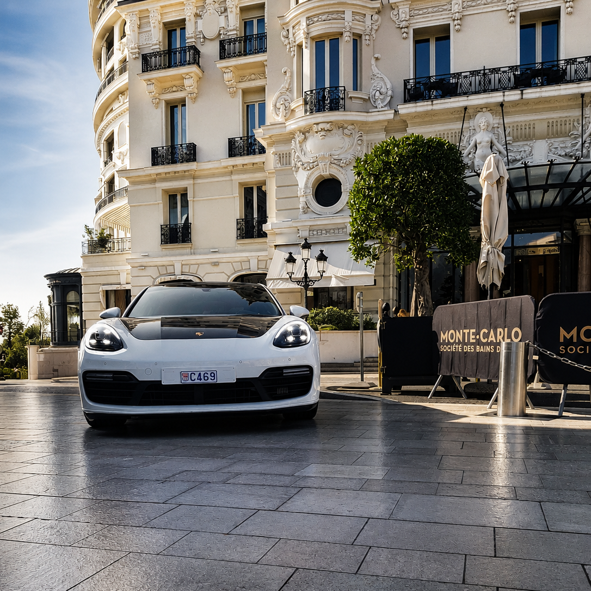
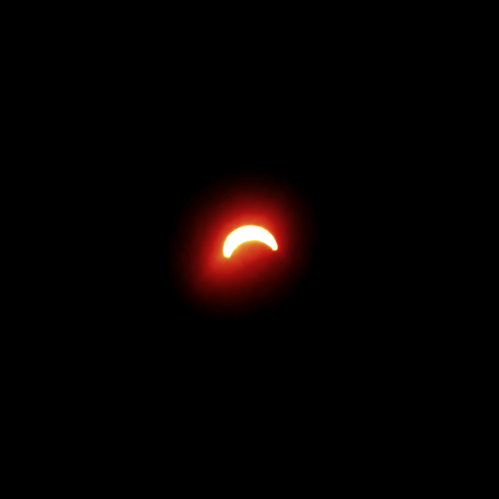
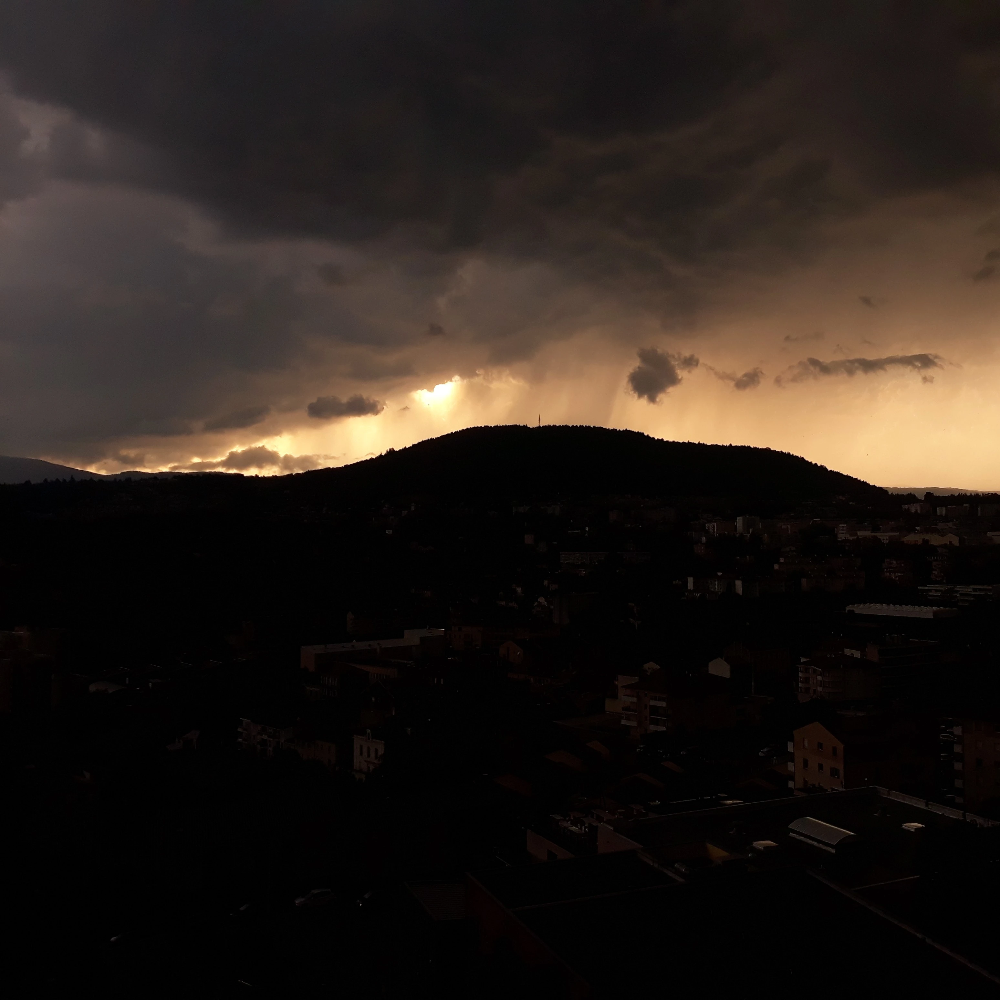
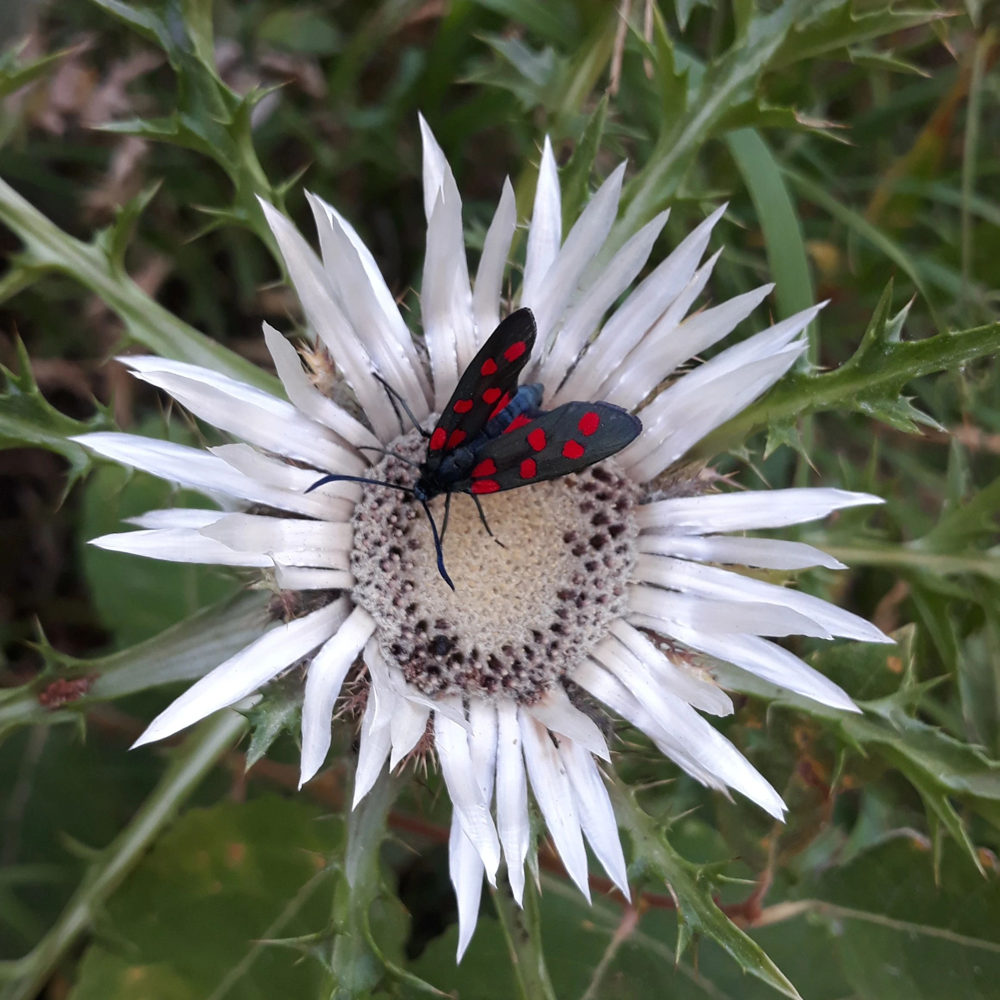
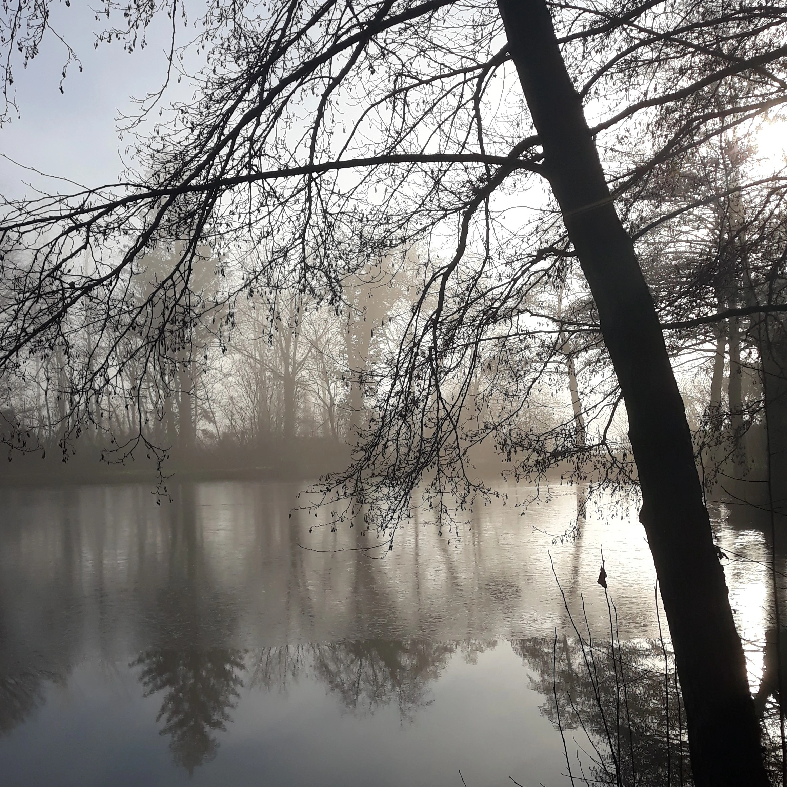
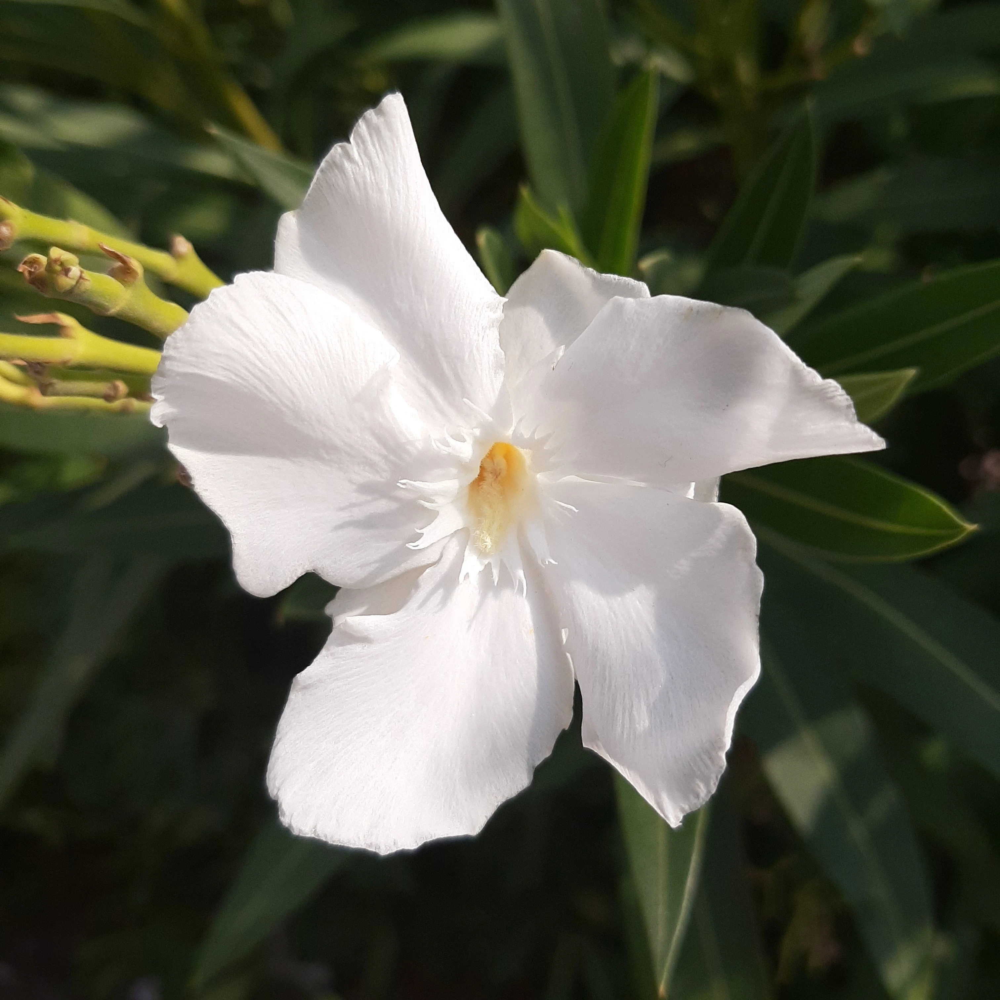
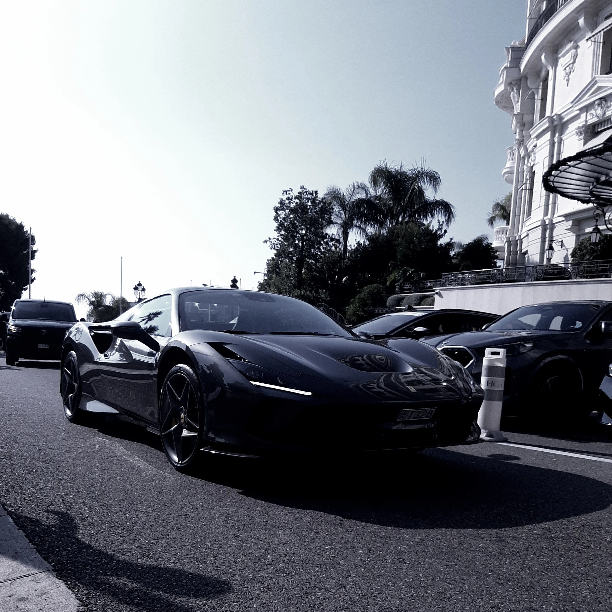
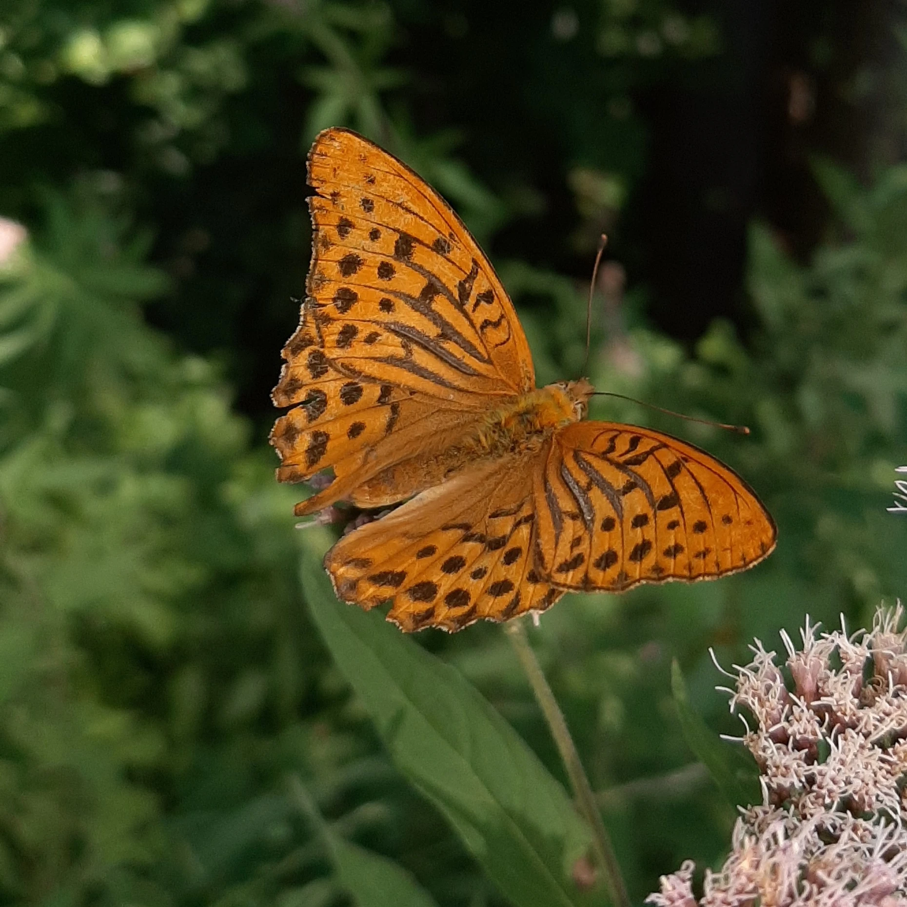

Bonjour, je suis Titouan Genève
Étudiant en BTS SIO option SLAM
Passionné par la programmation, la cybersécurité et le développement web. À la recherche d'un stage dans le domaine du numérique.
Annonay (07) Permis B + Véhicule 18 ans

Photographie d'une porsche

Photographie d'une éclipse

Photographie de Annonay par temps d'orage

Photographie d'un papillon zygène posé sur une fleur de carline blanche

Photographie d'un lac brumeux

Photographie de laurieur rose dans le Devoluy

Photographie d'une ferrari à Monaco

Photographie d'un papillon tabac d'espagne dans le Devoluy